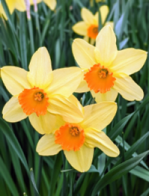
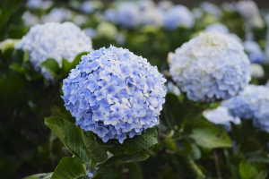
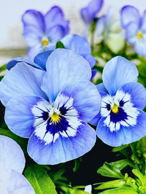
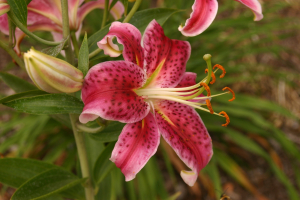
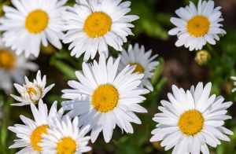

Hello & Welcome!
Hi, this is my store for shopping for flowers! We have a LOT of floral
that you can order for great prices. You can order a varied amount of bouquets
based on the different season.
We also do bouquets for different holidays as well!
Oh, we also do custom bouquets! For special occasions like
wedding's and ceremony's! We have so many types of flower that you will enjoy
and brighten up your day.
I hope you enjoy browsing for the right type of bouquets for what you need! We sell seeds as well if you want to start your own garden!
↓ Flowers for You ↓

Sunlight: Full sun to partial shade
Soil: Use well-drained soil
Watering: One inch of water per week.
Planting: Dig a hole 2-3 times the height of the bulb, (if it has bulb) make sure point of bulb is facing the sky, and do this in the fall before the ground freezes.
Blooms: In the spring (depends on climate zone).

Sunlight: Partial sun with full sun in the morning, with light afternoon shade.
Soil: Use well-drained soil
Watering: One inch of water per week
Planting: Dig a hole that's as deep as the root ball 2-3 times as wide.
Blooms: Late spring to mid-summer.

Sunlight: Full sun to partial shade.
Soil: Use rich well-drained soil
Watering: Keep the soil constantly moist, but not soggy.
Planting: Dig a hole twice as wide as the root ball and as deep.
Blooms: Early spring and fall.

Sunlight: Full sun.
Soil: Use moist well-drained soil.
Watering: When the top of soil feels dry.
Planting: Dig a hole 6 inches and 8-12 wide.
Blooms: Late spring through early summer into early fall.

Sunlight: Full sun.
Soil: Use loose well-drained soil.
Watering: When the top of soil feels dry.
Planting: Dig a hole twice as wide and as deep as the root ball.
Blooms: Late spring through late summer.